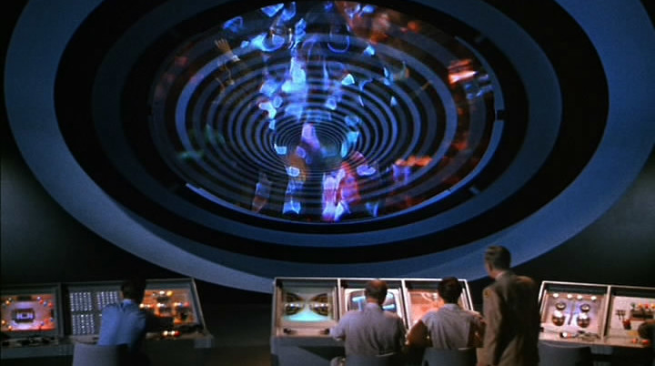
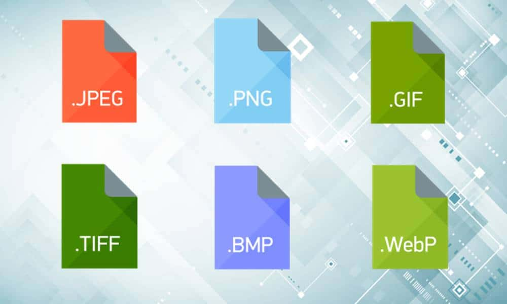
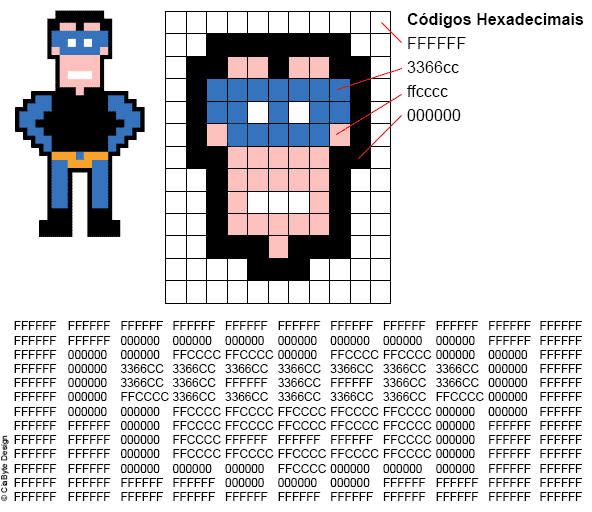
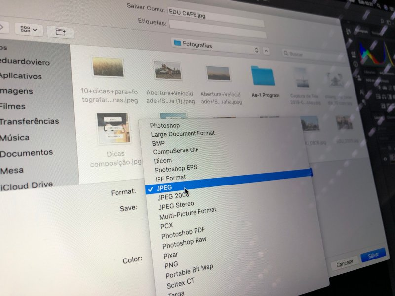
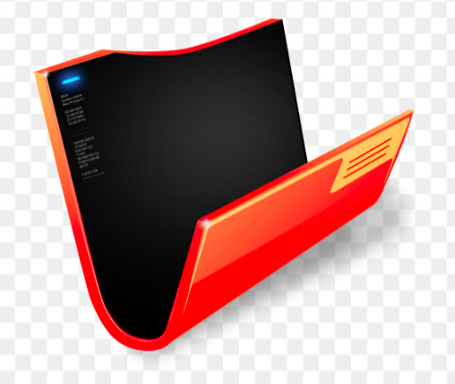

O proposito dessa apresentação é demonstrar os tipos de imagens / diferenças entre eles, como e quando usar cada um deles e algumas dicas para otimização.
Antes de iniciarmos os principais tópicos da apresentação, seria legal conhecermos a linha do tempo referente às imagens digitais.
Referência: visuarea
Aproveitando a linha do tempo, vamos passar em ordem cronologica pelos formatos mais comuns da web, sendo eles: GIF, BMP (para entender o que é um bitmap), JPEG, PNG, SVG, WEBP.
O GIF é uma imagem em formato de bitmap, que suporta até 8 bits por pixel para cada imagem, o que permite que as figuras obterem uma cartela de até 256 cores. Seu diferencial diante dos demais formatos existentes é que permite que se crie animações ou pequenos clipes.
Quando usar? Em situações que as imagens tem poucas cores, e uma animação é rapida (com poucos frames).
Exemplo:
Referência: tecnoveste
BMP é um formato de imagem bitmap, ou seja, um mapa de bits. É uma tabela cujos elementos contêm códigos de cores. Essa tabela pode ser visualizada na tela como uma imagem colorida, onde cada valor de cor é substituído pela cor propriamente dita, ou na forma que ela é realmente gravada, com os códigos das cores.
Quando usar? Não recomendo o uso para web.
Formato da imagem:
Referências: tecnoveste, ciabyte
JPEG (Joint Photographic Experts Group) é um formato de arquivo de imagem popular, geralmente usado por câmeras digitais para armazenar fotos, pois suporta 16 milhões cores. O formato também suporta vários níveis de compactação, o que o torna ideal para gráficos para web.
Quando usar? Normalmente usado para fotos, ou imagens com extensa gama de cores. Sua compactação ajuda o tamanho do arquivo não ser muito "pesado".
Exemplo:
Referência: Eduardo & Mônica
A sigla PNG significa “Portable Network Graphics” e consiste em um formato de imagem amplamente utilizado no ambiente web (mas não limitado ao mesmo). Além disso, seus grandes diferenciais estão na capacidade da imagem não perder a qualidade no caso de compressão e na capacidade de suportar a transparência.
Quando usar? Normalmente usado em situações onde se tem poucas cores (ilustrações, artes, icones). Como não tem uma compressão tão boa quanto o JPG para fotos.
Formato:
Exemplo (aplicação sobre uma div com background azul):
Referências: futuraexpress, gratispng
Diferente das imagens anteriores que eram matriciais (bitmap e/ou outras técnicas) o SVG é vetorial, ou seja, o SVG é um formato de arquivo usado para a criação de logotipos, ícones e outras artes que é altamente escalável. Além de proporcionar altíssima qualidade de imagem, é extremamente escalável se compararmos com outros formatos, como o PNG, o que torna o SVG ideal para manter a aparência dos sites em diversos tamanhos de tela.
O SVG diferente das outras imagens, tem seu "código aberto", ele tem uma estrutura similar a XML com CSS, ao qual o desenvolvedor pode interagir com o código e passar propriedades de cores.
Quando usar? Sempre que possível para icones, ilustrações, ou artes simples vetoriais.
Lembrete: Depois da demonstração abaixo (incluindo zoom do navegador), mostrar o código fonte das imagens no VS Code.
Exemplo:
| SVG | PNG |
|---|---|
| Icone de um telefone | |
|
Size: 32x32px (original)
|
Size: 128x128px
|
| Icone de um vírus | |
|
Size: 154x154px (original)
|
Size: 128x128px
|
Referência: rockcontent
Criado em 2010 pelo Google, o formato WebP representa imagens com a mesma qualidade em um tamanho menor. Ou seja, economiza espaço, aumenta a velocidade de uma página e (quase) não perde em qualidade. Na prática, tem como principal objetivo compactar imagens de forma mais eficiente para oferecer uma experiência mais rápida ao usuário.
Quando usar? Sempre que possível para fotos ou imagens com muitas cores. O formato oferece o melhor ganho em comparação a JPG, PNG e GIF.
Para ter uma comparação justa, abaixo segue um comparativo de duas imagens, JPG e WWEBP, ambas otimizadas pelo Squoosh, ambas com 75% de qualidade.
Comparativo:
| JPG | WEBP |
|---|---|
| Imagem representando natureza | |
|
Size: 1140x550px (original)
|
Size: 1140x550px
|
Lembrete: Para os olhos mais atentos, é perceptivel o detalhe das nuvens no ceu.
Referências: rockcontent
| Fotos (muitas cores, tamanho maior) | Ícones, ilustrações (poucas cores) |
|---|---|
|
|
O que pode impactar na decisão? Alguns navegadores não tem suporte a WEBP e SVG, sendo assim é
bom conhecer seu usuário antes de definir o tipo imagem.
Nome do arquivo: logotipo-minu.bmp
Tipo: BMP (criado no GIMP - Abrir no editor para mostrar)
Tamanho: 9.7kb
Nome do arquivo: logotipo-minu.svg
Tipo: SVG (criado pelo Tiago Parra, editado no VS Code)
Tamanho: 1.8KB